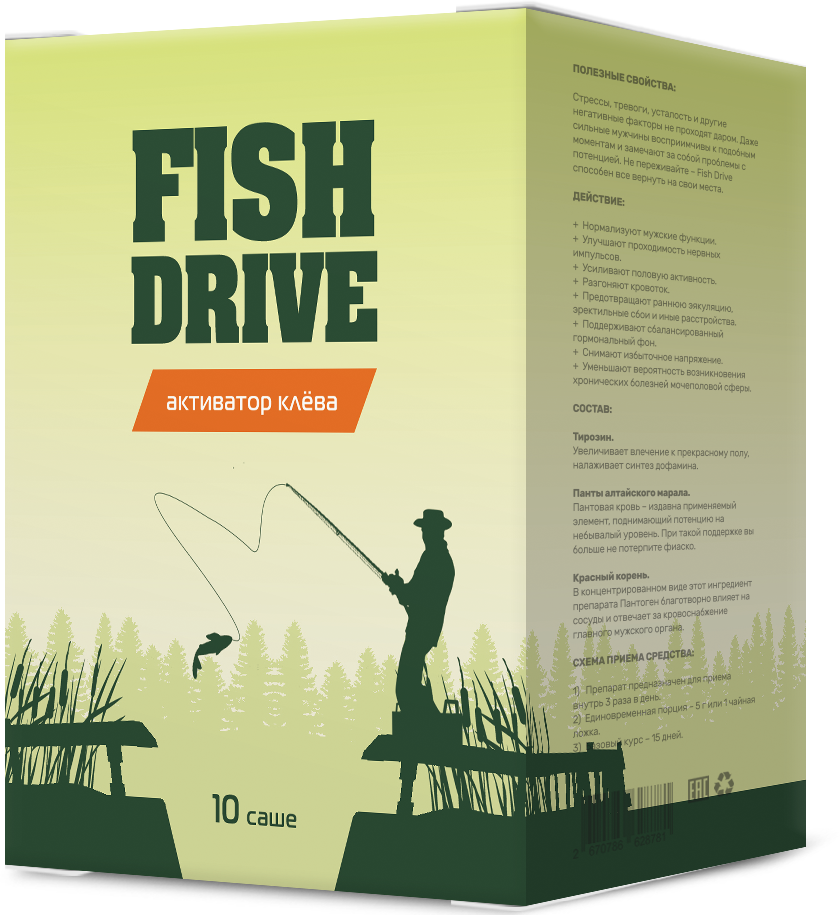
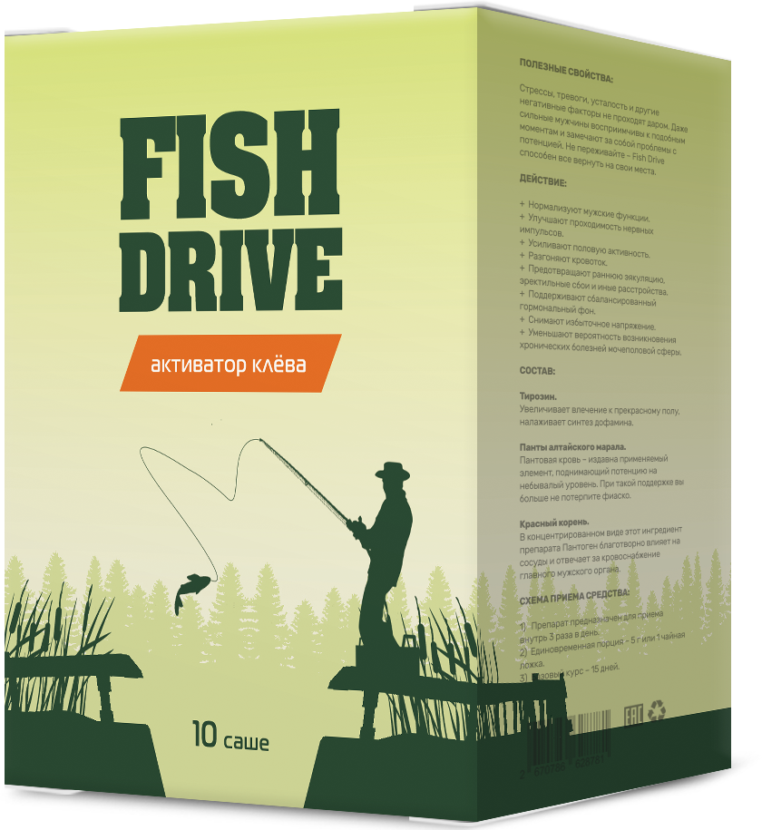

-
Действует всегда:
при любой погоде в любой воде и в любое время суток -
Длительный клев с первых минут:
приманка расходится по воде за 10 секунд и держится 3-4 часа -
Клюет только крупная рыба
приманка действует только на действительно здоровых рыб
Хватает на 15 кг прикорма и на 40 часов сумасшедшего клева
Ваши данные защищены!